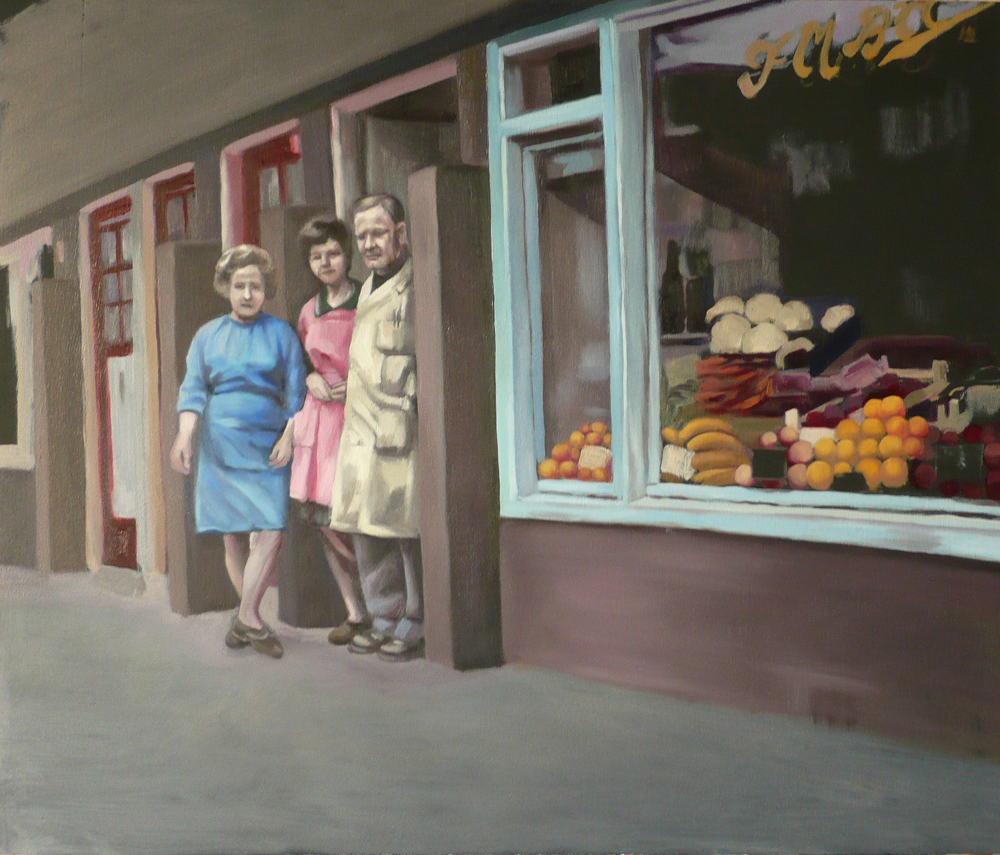
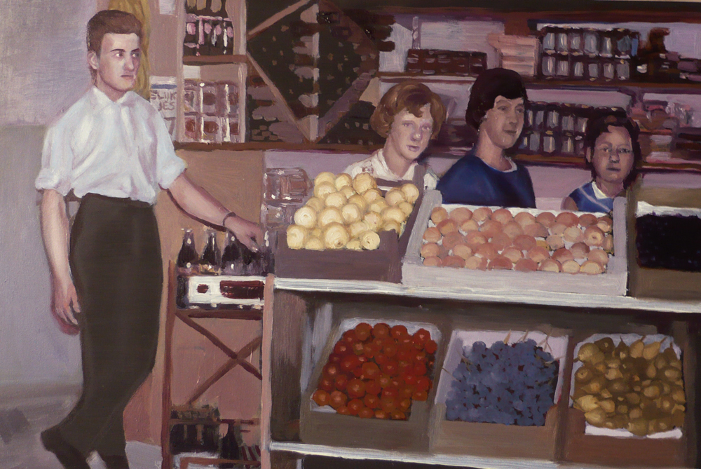
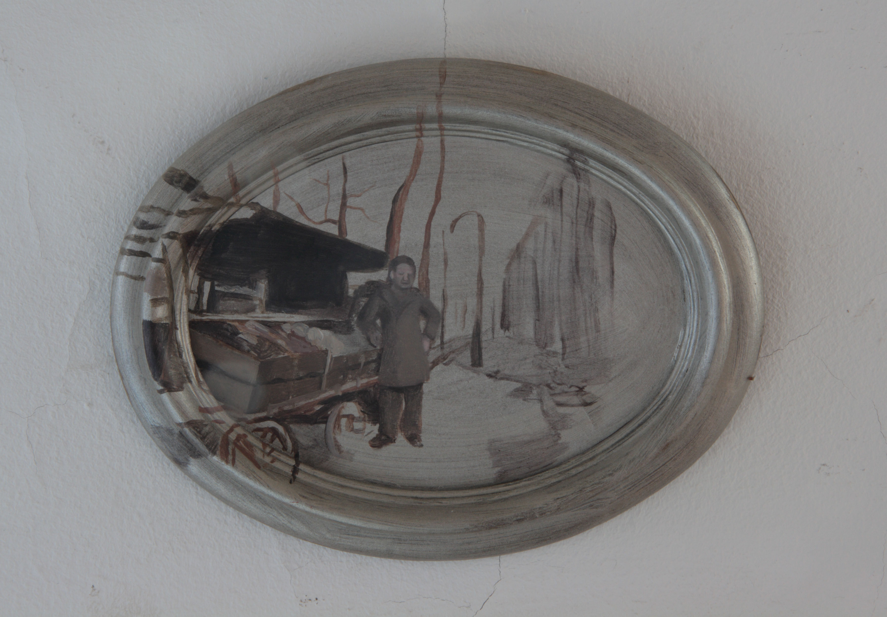
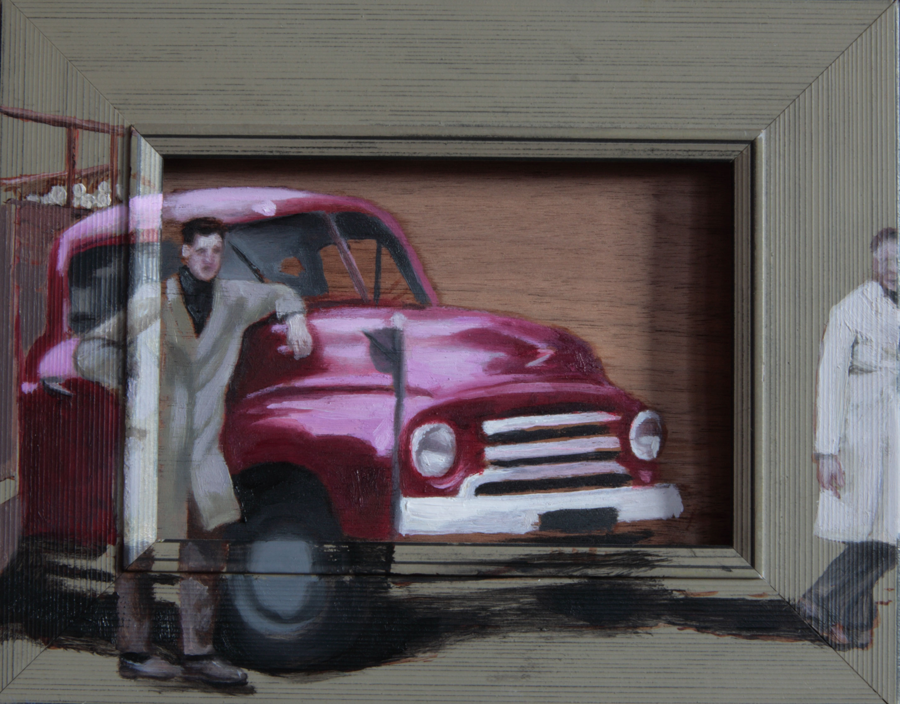
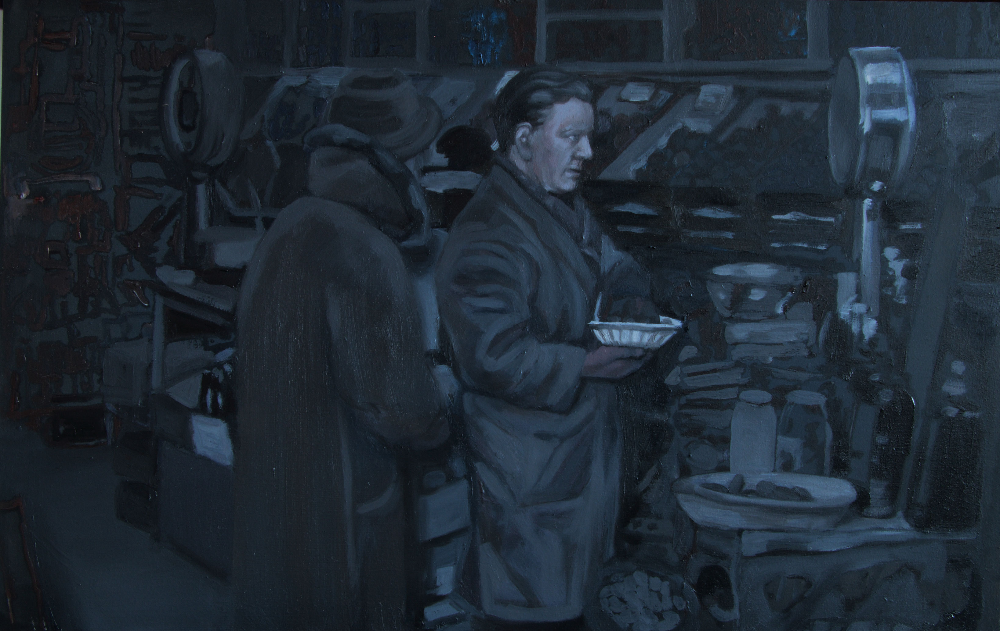
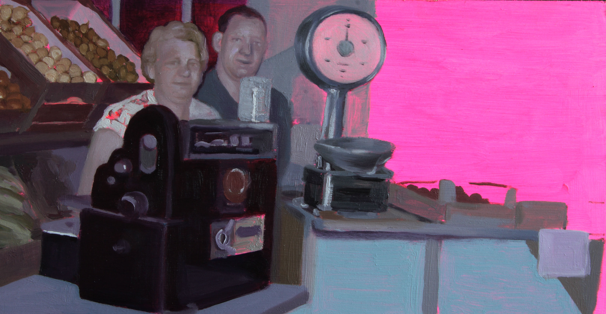
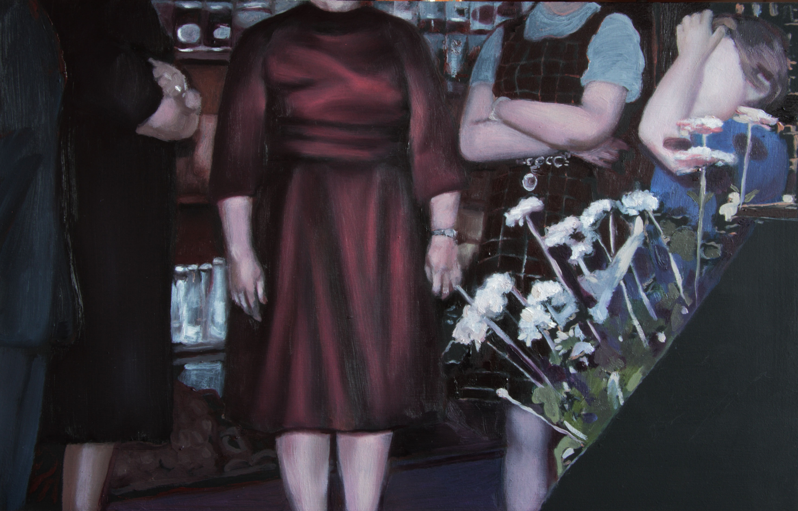

Scroll naar beneden voor meer schilderijen.

Firma Broekman, acrylverf op paneel, 40cm x 35cm, 2012

Firma Broekman, Straatweg, olieverf op paneel, 72 x 60cm, 2014

Ondiep 2, olieverf op paneel, 35cm x 40cm, 2013

Freek, latex en olieverf op hout, 16cm x 21cm, 2013

Z.T. olieverf op fineer op lijst, 17,5 x 22,5cm, 2013

Black light, olieverf op latex op glas, doorsnede 15cm, 2014

Freek in grijs, olieverf op paneel, 35cm x 40cm, 2014

Firma in roze, olieverf op paneel, 20cm x 38cm, 2013

Firma in oranje, olieverf op paneel, 20cm x 38cm, 2013

De opening, olieverf op paneel, 35cm x 40cm, 2014

Ondiep, olieverf op paneel, 43cm x 28cm, 2013